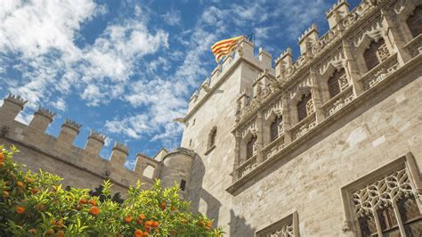
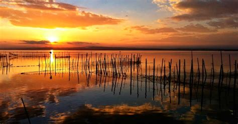

Valencia
Overview
Valencia is a vibrant autonomous community on Spain’s eastern Mediterranean coast, famous for its rich history, stunning architecture, and culinary traditions. Known as the birthplace of paella, it blends cultural heritage with modern urban life and beautiful beaches.
Quick Facts
- Capital: Valencia
- Regional Languages: Spanish, Valencian (Catalan)
- Population: ~2.5 million
- Famous For: Paella, Fallas Festival, City of Arts and Sciences
- Fun Fact: Valencia hosts the spectacular Fallas festival every March with huge artistic monuments and fireworks!
Popular Dishes
Paella Valenciana

Fideuà

Horchata

All i Pebre

Famous Landmarks
Ciudad de las Artes y las Ciencias

La Lonja de la Seda

Parque Natural de la Albufera

Catedral de Valencia

Best Time to Visit
The best time to visit Valencia is during spring (March–May) when the weather is pleasant and the Fallas festival lights up the city, or in autumn (September–November) for milder weather and fewer tourists.
Regional Symbols
- Flag:
- Emblem: